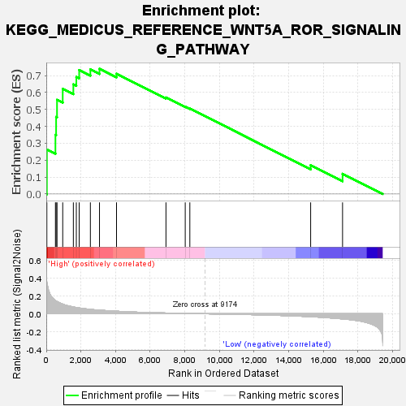
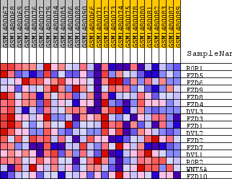
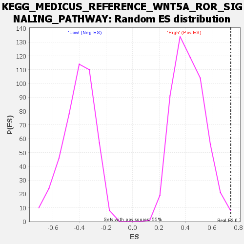

| Dataset | WG6v3.MRPL3.cls#High_versus_Low.MRPL3.cls#High_versus_Low_repos |
| Phenotype | MRPL3.cls#High_versus_Low_repos |
| Upregulated in class | High |
| GeneSet | KEGG_MEDICUS_REFERENCE_WNT5A_ROR_SIGNALING_PATHWAY |
| Enrichment Score (ES) | 0.7398522 |
| Normalized Enrichment Score (NES) | 1.7429879 |
| Nominal p-value | 0.005424955 |
| FDR q-value | 0.33017173 |
| FWER p-Value | 0.337 |

| SYMBOL | TITLE | RANK IN GENE LIST | RANK METRIC SCORE | RUNNING ES | CORE ENRICHMENT | |
|---|---|---|---|---|---|---|
| 1 | ROR1 | ROR1 | 34 | 0.348 | 0.2627 | Yes |
| 2 | FZD5 | FZD5 | 528 | 0.147 | 0.3493 | Yes |
| 3 | FZD6 | FZD6 | 568 | 0.142 | 0.4551 | Yes |
| 4 | FZD9 | FZD9 | 620 | 0.137 | 0.5563 | Yes |
| 5 | FZD8 | FZD8 | 949 | 0.108 | 0.6216 | Yes |
| 6 | FZD4 | FZD4 | 1563 | 0.076 | 0.6477 | Yes |
| 7 | DVL3 | DVL3 | 1735 | 0.070 | 0.6918 | Yes |
| 8 | FZD3 | FZD3 | 1899 | 0.065 | 0.7326 | Yes |
| 9 | FZD1 | FZD1 | 2546 | 0.049 | 0.7365 | Yes |
| 10 | DVL2 | DVL2 | 3072 | 0.040 | 0.7399 | Yes |
| 11 | FZD2 | FZD2 | 4055 | 0.028 | 0.7108 | No |
| 12 | FZD7 | FZD7 | 6910 | 0.009 | 0.5703 | No |
| 13 | DVL1 | DVL1 | 8022 | 0.004 | 0.5162 | No |
| 14 | ROR2 | ROR2 | 8288 | 0.003 | 0.5050 | No |
| 15 | WNT5A | WNT5A | 15264 | -0.033 | 0.1706 | No |
| 16 | FZD10 | FZD10 | 17105 | -0.057 | 0.1194 | No |

